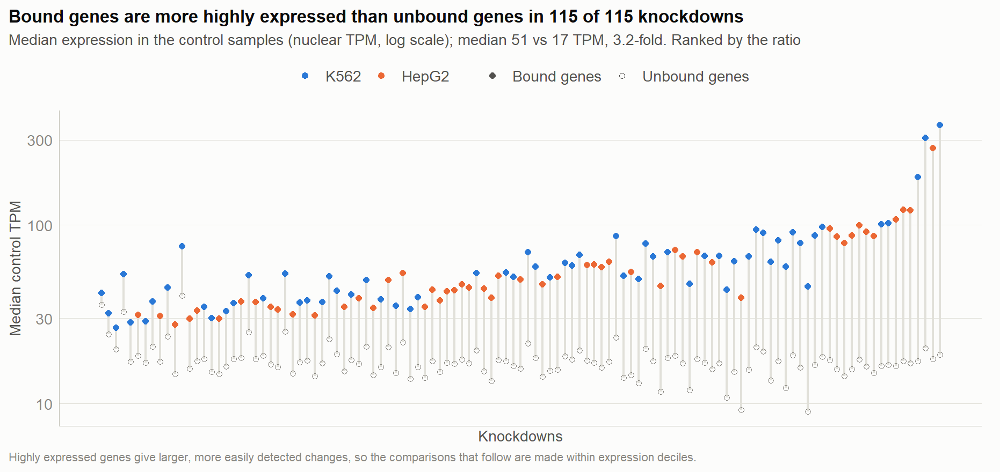
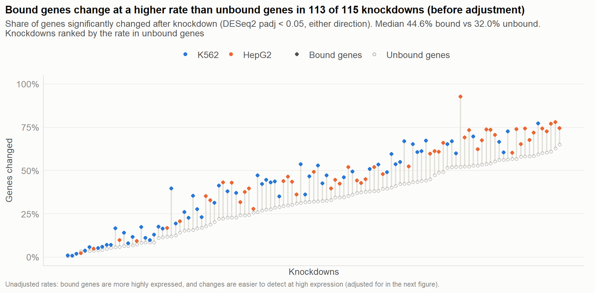
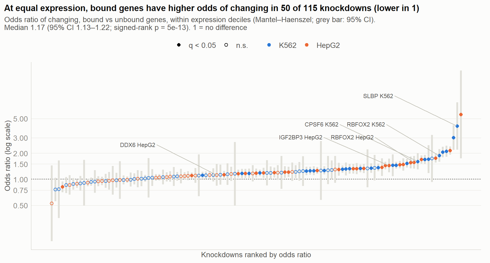
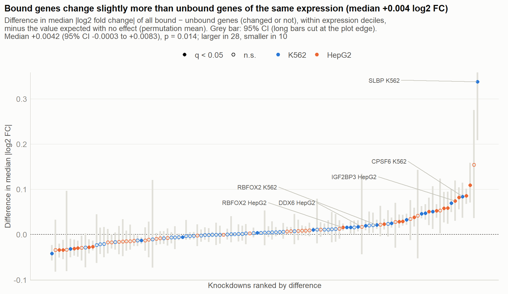
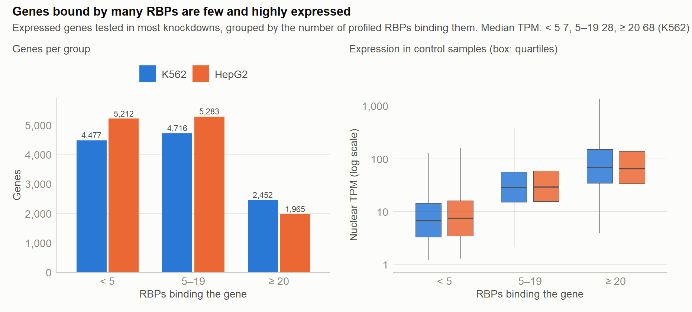
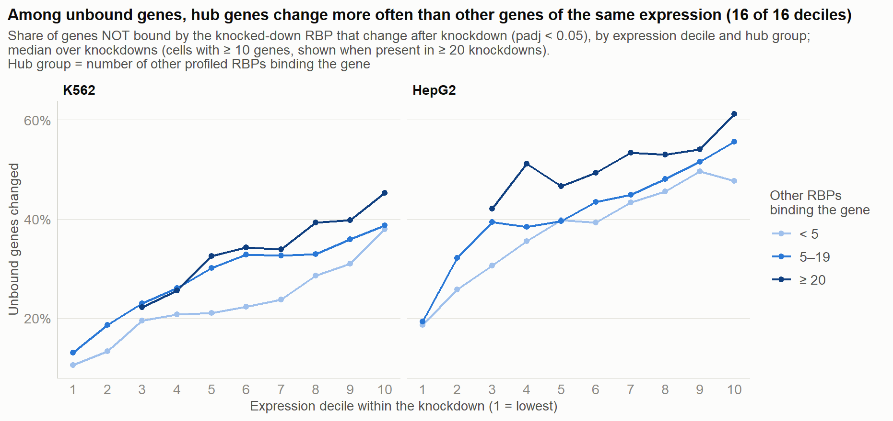
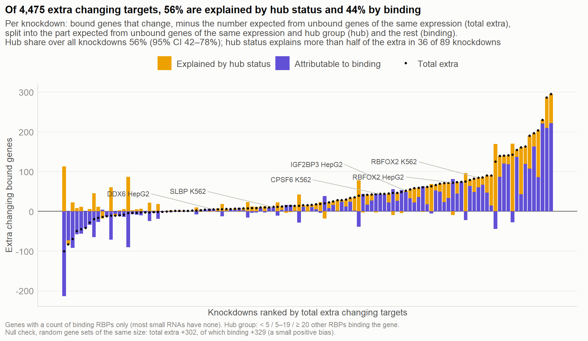
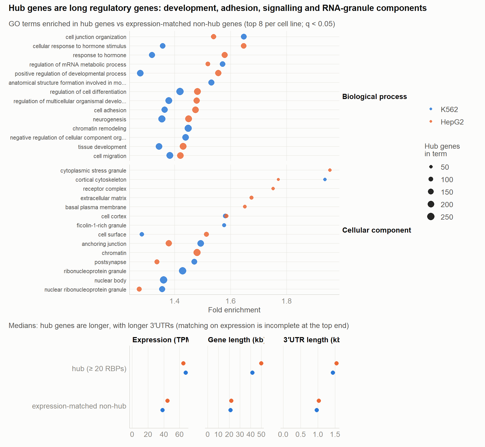

Binding and RNA change
When an RBP is knocked down, do the genes it binds change more than genes it does not bind?
For each of the 115 knockdowns kept on Knockdown data, genes are labelled bound (at least one eCLIP peak of the depleted RBP in the same cell line) or unbound, and changed (significantly different from the control, adjusted p < 0.05, either direction) or unchanged. A typical knockdown has 12,844 analysed genes, 1,186 of them bound. All comparisons are made within a knockdown, between its bound and unbound genes, so effects shared by all knockdowns cancel out.
Bound genes are more highly expressed

Extended legend
- Expression: median nuclear TPM across the cell line’s control samples. Median 51 (bound) vs 17 TPM (unbound), 3.2-fold; higher for bound genes in 115 of 115 knockdowns.
- Why it matters: eCLIP detects binding mostly on abundant RNAs, and changes are easier to detect in abundant RNAs. Without adjustment, bound genes would look more responsive simply because they are more abundant. Every comparison below is therefore made within expression deciles (10 groups of genes of similar expression, defined within each knockdown).
- Genes: tested by DESeq2 for the knockdown, expressed (nuclear TPM ≥ 1), not the RBP’s own gene, with a defined adjusted p-value. The same genes and deciles are used in Figures 1–4.
Script: analysis/R/13_bound_vs_unbound.R. Figures: analysis/R/13_bound_vs_unbound_figures.R; data: analysis/results/tables/bvu_baseline_expression.tsv.
Do bound genes change more often?

Extended legend
- Change rate: share of genes with adjusted p < 0.05. Median 45% of bound vs 32% of unbound genes; unadjusted odds ratio 1.77.
- Ranking: knockdowns ordered by the change rate of unbound genes, which ranges widely: some knockdowns change few genes, others more than half.
- These rates are not yet adjusted for expression (Figure 1).
Script: analysis/R/18_change_rate.R. Data: analysis/results/tables/change_rate.tsv.

Extended legend
- Odds ratio: for each knockdown, a 2 × 2 table (bound / unbound × changed / unchanged) within each expression decile, combined with the Mantel–Haenszel odds ratio. 1 = no difference; 1.5 = 50% higher odds of changing for a bound gene than for an unbound gene of the same expression.
- Result: median 1.17 (95% CI 1.13–1.22; signed-rank p = 5e-13); above 1 in 92 knockdowns; significantly higher in 50 and lower in 1 (Benjamini–Hochberg q < 0.05). K562 1.19, HepG2 1.16.
- Known regulators are among the clearest: SLBP K562 4.1, RBFOX2 K562 1.9, CPSF6 K562 1.6, IGF2BP3 HepG2 1.4; DDX6 HepG2 1.1 (not significant).
- Checks: a stricter control (only genes with adjusted p > 0.5 count as unchanged) gives 1.19; random gene sets of the same size give 1.00 with no significant knockdowns. Adjusting for hub status as well lowers the median to 1.07 (Figure 7).
Script: analysis/R/18_change_rate.R.
Are the changes larger?

Extended legend
- Genes: all bound and unbound genes, changed or not; size of change = |shrunken log2 fold change|, both directions together.
- Statistic: within each expression decile, median |log2 FC| of bound minus unbound genes, averaged over deciles (weighted by bound genes). Medians of small, skewed groups give a small positive value even with no effect, so the value expected with no effect (from 1,000 permutations of the bound labels) is subtracted.
- Result: median +0.0042 log2 FC (95% CI -0.0003 to +0.0083; signed-rank p = 0.014); larger in 28 and smaller in 10 knockdowns. Random gene sets: +0.0011. Knockdowns with larger changes also have higher odds of changing (Spearman ρ = 0.68 with Figure 3).
- Examples: SLBP K562 +0.34, CPSF6 K562 +0.08, IGF2BP3 HepG2 +0.07, RBFOX2 K562 +0.02.
- Uncertainty: per-knockdown 95% CIs from bootstrapping genes (optimistic, because genes in a knockdown are not independent); the across-knockdown summary is the main result.
Script: analysis/R/13_bound_vs_unbound.R. Data: analysis/results/tables/bvu_magnitude.tsv.
How much of the effect comes from hub genes?
Genes bound by many RBPs (“hub genes”) are common and change after the knockdown of almost any RBP. Because a gene bound by the depleted RBP is often a hub gene, part of the effect in Figure 3 could come from hub status rather than from binding.

Extended legend
- Hub group: number of profiled RBPs (eCLIP, ≥ 100 peaks) binding the gene: < 5, 5–19 or ≥ 20. K562: 4,477 / 4,716 / 2,452 genes; HepG2: 5,212 / 5,283 / 1,965.
- Expression: median nuclear TPM 7 / 28 / 68 (K562).
- Genes: expressed genes tested in at least half of the cell line’s knockdowns and with a count of binding RBPs.
Script: analysis/R/19_hub_attribution.R. Data: analysis/results/tables/hub_groups.tsv.

Extended legend
- Genes: only genes not bound by the knocked-down RBP, so binding cannot explain their changes. Hub group counts the other RBPs binding the gene.
- Result: hub genes (≥ 20 other RBPs) change more often than genes bound by < 5 RBPs in 16 of 16 decile × cell-line comparisons with enough data. Median change rate across deciles: K562 22% (< 5) vs 34% (≥ 20); HepG2 40% vs 52%.
- Display: median over knockdowns; a point is shown when the decile × hub-group cell has ≥ 10 genes in at least 20 knockdowns (few hub genes are lowly expressed).
Script: analysis/R/19_hub_attribution.R. Data: analysis/results/tables/hub_unbound_rates.tsv.

Extended legend
- For each knockdown:
- observed: bound genes that change;
- expected from expression: the number expected if bound genes changed like unbound genes of the same expression decile;
- expected from expression and hub status: the same, using unbound genes of the same decile and hub group (< 5 / 5–19 / ≥ 20 other RBPs).
- Split: the extra changing targets (observed − expected from expression; black dot) = explained by hub status (yellow; the difference between the two expectations) + attributable to binding (purple; observed − expected from expression and hub status). Bars below 0 mean fewer changes than expected.
- Result: of 4,475 extra changing bound genes over all knockdowns, 2,522 (56%, 95% CI 42%–78%) are explained by hub status and 1,953 by binding. Hub status explains more than half of the extra in 36 of 89 knockdowns with any extra.
- Known regulators are binding-driven: hub share SLBP K562 0.02, CPSF6 K562 0.02, IGF2BP3 HepG2 0.06, RBFOX2 K562 0.28.
- Caveats:
- Only genes with a count of binding RBPs are used (median 92% of each knockdown’s genes; most of the rest are small RNAs).
- Random gene sets give +302 extra changing genes in total, almost all in the binding part (+329): the binding part is slightly overstated.
- Counts scale with the number of bound genes; compare RBPs’ effect strength with Figure 3 instead.
- “Explained by hub status” means “changes at the rate typical of genes bound by many RBPs”; hub status may stand in for other properties of these genes (Figure 8).
Script: analysis/R/19_hub_attribution.R. Data: analysis/results/tables/hub_attribution.tsv.

Extended legend
- Test: GO enrichment (clusterProfiler; biological process and cellular component; Benjamini–Hochberg q < 0.05; redundant terms collapsed) of hub genes (≥ 20 RBPs) against hub genes plus 3 expression-matched non-hub genes per hub gene. 90 terms are significant in both cell lines.
- Top biological processes: positive regulation of developmental process; response to hormone; regulation of cell differentiation; cellular response to hormone stimulus; cell junction organization; chromatin remodeling; anatomical structure formation involved in morphogenesis.
- Gene profile: hub genes are about twice as long as expression-matched non-hub genes and have longer 3′UTRs; matching on expression is incomplete for the most highly expressed genes.
Script: analysis/R/17_hub_go.R. Data: analysis/results/tables/hub_go.tsv, hub_gene_profile.tsv.
Key takeaways
- Bound genes change more often than unbound genes of the same expression. The expression-adjusted odds of changing are higher for bound genes (median odds ratio 1.17), significantly so in 50 of 115 knockdowns; without adjusting for expression the difference looks much larger (1.77).
- The changes are barely larger. At equal expression, bound genes change by +0.004 log2 FC more than unbound genes (median): binding mainly affects whether a gene changes, not how much.
- About half of the extra changes come from hub genes. Genes bound by many RBPs change after almost any knockdown; hub status explains 56% of the extra changing targets, binding the remaining 44%.
- Known regulators show a real binding effect. SLBP, CPSF6, IGF2BP3 and RBFOX2 all have clearly raised odds of change in their bound genes, and their extra changing targets are almost entirely attributable to binding.
- For most RBPs, binding alone is a weak predictor of RNA-level change after knockdown, consistent with many binding sites being non-functional at the RNA level, or acting on splicing, localisation or translation rather than RNA abundance.